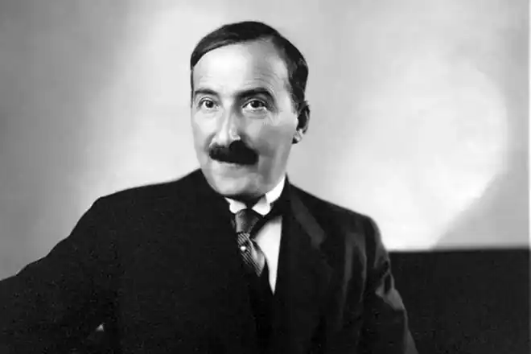

ЦВАЙҐ, Стефан (Zweig, Stefan — 28.11.1881, Відень — 23.02.1942, Петрополіс, Бразилія) — австрійський письменник. У мемуарній книзі "Вчорашній світ" ("Die Welt von gestern") Цвайґ підкреслено лаконічно розповідає про своє дитинство та підліткові роки. Коли йдеться про батьківський дім, гімназію, а потім університет, письменник свідомо стримує свої почуття, підкреслюючи таким чином, що його юнацькі роки були точнісінько такими ж, як і в багатьох інших європейських інтелігентів на зламі століть.
Письменник народився у 1881 р. в родині багатого єврейського негоціанта, власника текстильної мануфактури. Заможні підприємці у третьому поколінні, його батьки зуміли створити вдома атмосферу витонченої духовної культури, характерної для віденського бомонду кінця XIX ст. Найгіршою халепою підліткові, либонь, могли видатися хіба що дріб'язкові зауваження якогось надто суворого гімназійного викладача. Та от в останній рік століття зачинилися двері гімназії, і Цвайґ, тепер уже студент, котрий старанно вивчає романську філологію у Віденському університеті, робить перші кроки назустріч омріяній свободі. Але що таке свобода для молодої людини на початку нового століття? Для Цвайґа вона полягала у можливості відвідувати музеї, театри та бібліотеки у Венеції та Мілані, Парижі та Лондоні. Він побував у Лондоні та Парижі (1905), мандрував по Італії та Іспанії (1906), відвідав Індію, Індокитай, США, Кубу, Панаму (1912). Якийсь час мешкав у Швейцарії (1917— 1918), а після закінчення Першої світової війни повернувся до Австрії й оселився поблизу Зальцбурга.
Ерудиція Цвайґа й досі захоплює та вражає. Мандруючи, він із рідкісним завзяттям та наполегливістю поповнював свої знання. Відчуття власної обдарованості спонукало його до поетичної творчості, а статки батьків дозволили без зайвого клопоту видати першу книгу. Так побачили світ "Сріберні струни" ("Silbeme Seiten", 1901), видані коштом автора. Цвайґ наважився надіслати свою першу збірку своєму кумирові — видатному австрійському поетові P.M. Рільке. Той відповів, надіславши власну книгу. Так почалася дружба, яка тривала аж до смерті Рільке. Надзвичайна поінформованість Цвайґа у всіх напрямах та течіях мистецького життя Європи перших десятиліть XX ст. пояснюється тим, що він не просто читав твори визнаних майстрів, а й підтримував приязні стосунки з такими видатними діячами культури, як Е. Верхарн, Р. Роллан, Ф. Мазераль, О. Роден, Т. Манн, З. Фройд, Дж. Джойс, Г. Гессе, Г. Веллс, П. Валері. Йому найвищою мірою була притаманна мистецька самовідданість. Замолоду він пережив пристрасне захоплення поезією Верхарна. Відкривши для себе цього талановитого бельгійського поета, Цвайґ став завзятим пропагандистом його творчості, переклав низку його віршів німецькою мовою. Коли Цвайґ прочитав епопею Роллана "Жан Крістоф", у нього виникло нездоланне бажання особисто познайомитися з автором цього твору. У роки Першої світової війни Цвайґ опублікував захоплений нарис про Р. Роллана, назвавши його "сумлінням Європи". Крім того, Цвайґ присвятив окремі есе Максимові Горькому, Т. Манну, М. Прусту і Й. Роту. Минуло вже не одне десятиліття відтоді, як були написані кращі оповідання Цвайґа. Історія доволі жорстоко повелася з тим усталеним трибом життя, на тлі якого зазвичай розгортаються драматичні події, що сталися давним-давно з паніями та панами, мешканцями респектабельних кварталів Відня, Лондона та Парижа. Змінився характер мислення, люди стали розкутішими у виявах своїх емоцій, але щоразу, коли сучасний читач відкриває для себе новелістичні шедеври Цвайґа, він почуває глибоке хвилювання, тому що письменник стоїть на варті нетлінних моральних цінностей. Такі оповідання Цвайґа, як "Амок" ("Amok", 1922), "Сум'яття почуттів" ("Verwirrung der Gefuhle", 1927), "Шахова новела" ("Schachnovelle", 1941), здобули світову славу. Новели Цвайґа вражають драматизмом, захоплюють незвичайними сюжетами і змушують замислитися над колізіями людських доль. Цвайґ невтомно переконує читача у тому, що людське серце надто беззахисне, що пристрасть штовхає людину не лише на подвиги, а й на злочини. Герої Цвайґа, зазвичай такі коректні, церемонні і незворушні, раптом потрапляють у вир бунтівних почуттів, що не зважають на усталені суспільні правила. І от уже перед читачем сповідаються не випещені самовдоволені обивателі, а змучені від страждань закохані, готові розкрити свою згорьовану душу кожному, хто ладен вислухати їх зі співчуттям. Цвайґ створив і детально обґрунтував власну модель новели, що відрізняється від творів загальновизнаних майстрів короткого жанру.Події більшості його історій відбуваються під час мандрівок — то захопливих, то виснажливих, а то й доволі небезпечних. Усе, що трапляється з героями, чигає на них у дорозі, під час коротких зупинок або невеликого перепочинку. Цвайґ, як і багато інших письменників, що успадкували його традицію, завжди концентрує й ущільнює дію. Драми розгортаються протягом лічених годин, але щоразу це вирішальні моменти життя, коли особистість зазнає випробування, доводить свою здатність до самопожертви. Осердям кожного оповідання Цвайґа стає монолог — герой виголошує його у стані афекту, коли перед ним розкривається найпотаємніша таїна. На цвайґівське трактування особистості помітний вплив справив З. Фройд. Услід за славетним австрійським психіатром, хоча й не ілюструючи його наукових ідей, а наче здійснюючи паралельне художнє дослідження, письменник відкриває людину у конфлікті із самою собою. Тіло нараз висуває їй свої владні вимоги, і світська дама, котра цілком сумирно і добро-порядно прожила сорок років, раптом протягом доби падає у прірву аморальності. Або, навпаки, роки розпусних походеньок перекреслює одна всепоглинаюча пристрасть таємничої незнайомки, чисте кохання якої виявилося непоміченим. Майже в усіх новелах Цвайґа розмірене життя його героїв, які начебто вгамували свої пристрасті, змінюється вибухом, оскільки щось приховане, досі незнане їм самим раптом виривається назовні, нездоланно захоплюючи благополучних персонажів у вир катастрофи. Не можна не зауважити і певного мелодраматизму багатьох новел Цвайґа. Його персонажі зазвичай намагаються прибрати трагічну позу. Але ця трагічність штучна і позірна, адже вони явно перебільшують масштаб конфліктів. Ці люди всього-на-всього порушили буржуазні норми життя, а гадають, ніби переступили закони людяності. Однак історії, розказані Цвайґом, вражають і сучасного читача — особливо ж тим, як автор відтворює стан стресу, викликаного шаленою пристрастю, що затьмарює розум. Новели Цвайґа можна назвати своєрідними конспектами романів. Проте коли письменник намагався розгорнути окрему подію у розлогу оповідь, то його романи перетворювалися на аморфні багатослівні новели. Відтак цвайґівські романи з сучасного життя загалом були невдалими. Він це розумів і рідко звертався до цього жанру. Письменник написав лише два такі твори: "Нетерпіння серця" ("Ungeduld des Herzens", 1938) і "Чад перевтілення"("Rauch der Verwand-lung"), вперше надрукований німецькою мовою лише через сорок років після смерті автора, у 1982 р. Історія, яку автор розповідає у романі "Нетерпіння серця", підводить риску під певною епохою, коли ще зберігалося лицарське ставлення до жінки, коли кодекс честі шанували вище від військового статуту, а горе неодмінно породжувало у душі вихованої людини співчуття. Почуття чарівної багатої кривоніжки, котра мешкає у розкішному замку, до юного бідного лейтенанта австрійської армії є щирими і піднесеними. Ц. надав сюжетові переконливості і психологічної гнучкості. Співчуття офіцера має глибоке людяне підґрунтя, він серцем відгукується на її страждання. Але, залишаючись у межах фальшивих умовностей, він сам не дозволяє собі, щоби співчуття переросло у справжнє почуття. Особливої гостроти сюжетові додає те, що конфлікт двох сердець, яким судилося покохати одне одного, відбувається влітку 1914 р. Героїня скоює самогубство у ту саму мить, коли у Сараєво вбивають спадкоємця австрійського трону. Неважко зрозуміти, чому Цвайґ не поспішав з публікацією роману "Чад перевтілення". Історія пересічної панночки, котра працює на пошті десь у глухій провінції, страждаючи від браку коштів та справжніх почуттів, видається доволі тривіальною. Коли ж їй, як за помахом чарівної палички, випадає нагода на якийсь час потрапити у вищий світ і там привернути увагу найімпозантніших кавалерів, то читач сприймає це як ще одну версію казки про Попелюшку. Але Кристині Хофленер не пощастило причарувати принца, їй доводиться повернутися додому. На цьому, власне, сюжет можна було б і закінчити. І це була б новела, цікава не так своєю свіжістю, як своєрідною кінематографічною стилістикою. Проте автор продовжує тему у несподіваному напрямку. Кристина зустрічає на життєвому шляху деградованого невдаху, що втратив свою людську гідність на фронті. Вочевидь тут Цвайґ перегукується з письменниками "втраченого покоління", зокрема з Е.М. Ремарком. Але Цвайґ-романіст пропонує цікаве детективне продовження, якого, щоправда, закінчити не встиг. Цвайґ нерідко писав на межі документалістики та мистецтва, створивши захопливі біографічні розповіді про Ф. Магеллана і Марію Стюарт, Еразма Роттердамського й О. де Бальзака. Життєпис Бальзака (1940) — безперечно, найяскравіший твір Цвайґа у цьому жанрі. Бальзак в інтерпретації Цвайґ — простодушний авантюрист, чарівна потвора, геніальний дилетант. Суперечності особистості породжують драматизм розповіді. Бальзакові від народження судилося стати великою людиною, він мав лише вирішити, у якій царині себе реалізувати. Він обрав літературу, щоби стати могутнім творцем і володарем двох із лишком тисяч бальзаківських персонажів. Бальзак прагне золота і розкоші, слави і добробуту, але вони доволі довго залишаються недоступними для нього так само, як і для героїв його "Людської комедії" — провінційних честолюбців, що подалися завойовувати Париж. Але життя Бальзака доводить, що будь-яка невдача — це сходинка, яка робить творця вищим. Цілеспрямованість генія неодмінно отримає винагороду, хоча іноді це трапляється аж після його смерті. В історичних романах не гріх домислювати історичний факт силою творчої фантазії.